El Portal de procesos es el sistema de Century Mold para pedir tiempo extra y transporte. Tú lo usas para pedir tiempo extra de tu área y ver cómo va cada solicitud.
Así camina una solicitud:
Tú la capturas y la envías.
El jefe de tu área (Autorización 1) la revisa y la autoriza o te la devuelve.
Autorización 2 da la segunda firma.
Recursos Humanos la confirma y pide el transporte al proveedor.
Si la fecha del tiempo extra pasa y la solicitud no terminó de autorizarse, queda Vencida. Por eso conviene enviarla con tiempo.
2. Primeros pasos
Entrar al portal
Abre https://centurymold-qro.web.app en tu navegador (Chrome, Edge o el de tu celular).
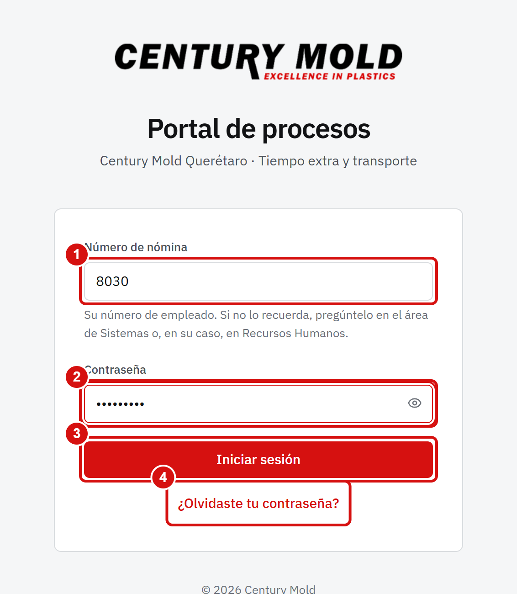
Escribe tu número de nómina.
Escribe tu contraseña. El ojito sirve para ver lo que escribes.
Toca Iniciar sesión.
Si no la recuerdas, toca ¿Olvidaste tu contraseña?.
La primera vez: cambia tu contraseña
Con la contraseña que te dieron, el portal te pide crear una contraseña nueva. No podrás usarlo hasta hacerlo.
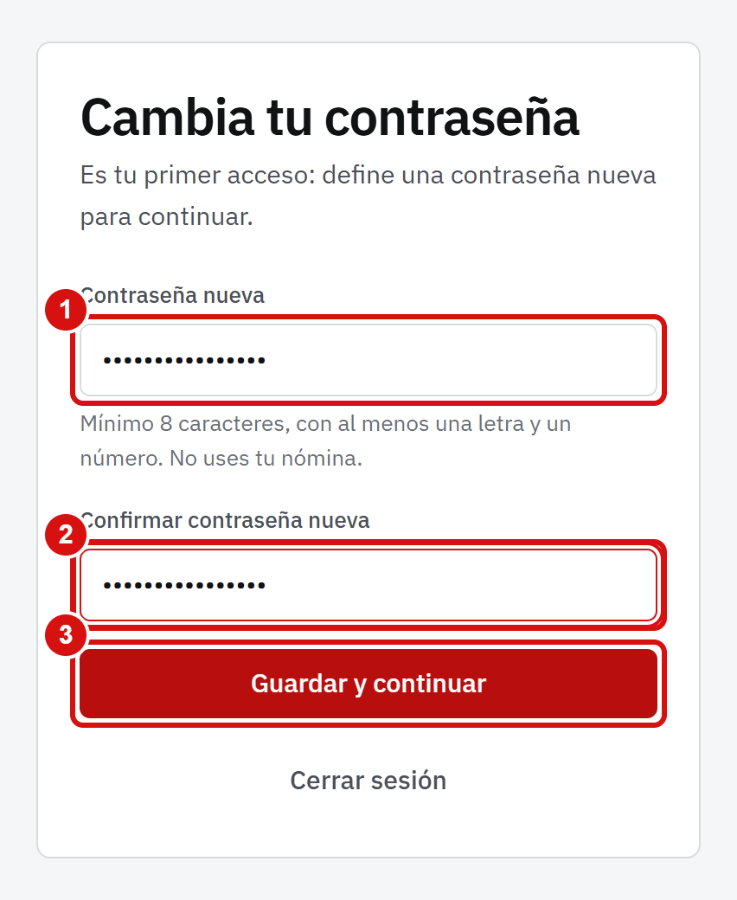
Escribe la contraseña nueva. Usa mínimo 8 caracteres, con letras y números.
Escríbela otra vez para confirmar.
Toca Guardar y continuar.
La contraseña nueva debe ser distinta a la que te dieron. No se la prestes a nadie.
Si olvidaste tu contraseña
Por seguridad, las contraseñas solo se restablecen en persona. Acude al área de Sistemas o a Recursos Humanos con tu identificación. Nunca te pediremos tu contraseña por teléfono, correo ni mensaje.
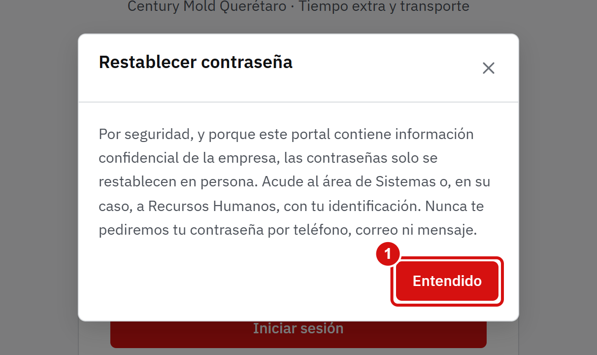
3. Mi cuenta: letra grande y tema
En Mi cuenta puedes dejar el portal como te quede mejor. Los cambios se guardan solos.
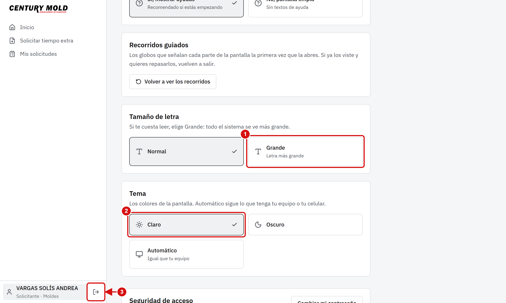
Elige el tamaño de letra: Grande si te cuesta leer.
Elige el tema: Claro, Oscuro o Automático (igual que tu equipo).
Para salir, toca el botón de cerrar sesión, abajo a la izquierda (junto a tu nombre).
En esta pantalla también puedes cambiar tu contraseña cuando quieras.
Cierre por inactividad. Si pasas 30 minutos sin tocar el teclado, el mouse o la pantalla, el portal cierra tu sesión para cuidar la información. Un minuto antes te avisa: toca Seguir aquí para continuar. Lo que no hayas guardado puede perderse: guarda tu borrador seguido.
4. Tu pantalla de Inicio
Al entrar ves tu Inicio: un resumen de tu área.
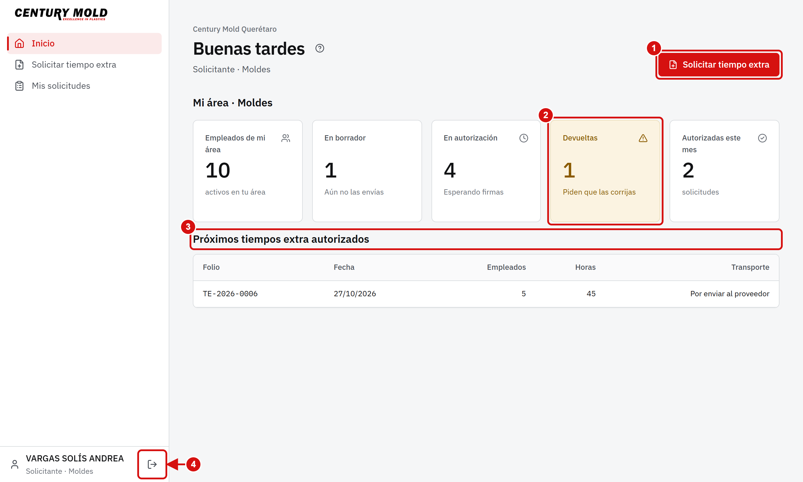
Botón Solicitar tiempo extra: para empezar una solicitud nueva.
Tarjetas con números: Empleados de mi área, En borrador, En autorización, Devueltas y Autorizadas este mes. Si hay Devueltas, la tarjeta se pone amarilla: alguien pide que la corrijas.
Próximos tiempos extra autorizados: los que ya tienen las dos firmas y están por hacerse.
Cerrar sesión.
El menú de la izquierda tiene tres opciones: Inicio, Solicitar tiempo extra y Mis solicitudes.
5. Pedir tiempo extra
Toca Solicitar tiempo extra. La pantalla tiene tres partes: los datos generales, los empleados y una barra de abajo con el resumen y los botones. Llénalas en este orden.
Paso 1 · Datos generales
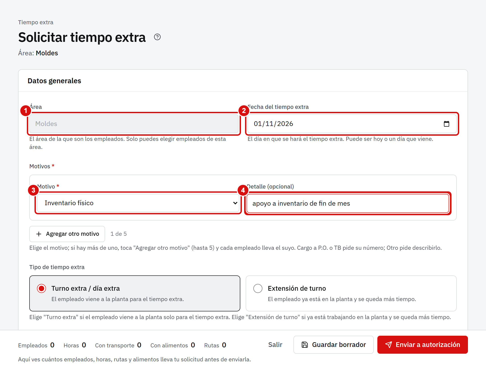
Área: ya viene la tuya. No se cambia.
Fecha del tiempo extra: el día en que se hará. Puede ser hoy o un día que viene.
Motivo: elige el motivo de la lista.
Detalle (opcional): una frase que explique, por ejemplo «apoyo a inventario».
Tipo de tiempo extra
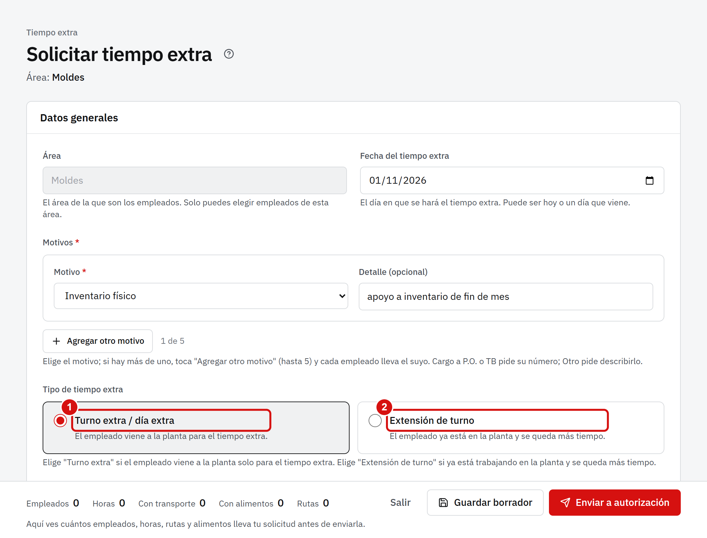
Turno extra / día extra: el empleado viene a la planta para el tiempo extra.
Extensión de turno: el empleado ya está en la planta y se queda más tiempo. En este tipo no se pide transporte de llegada.
Comentario
Escribe por qué se necesita el tiempo extra. Pide mínimo 10 letras. Es lo primero que leen quienes autorizan.
Paso 2 · Empleados
Toca Agregar empleados. Se abre la lista de empleados de tu área.
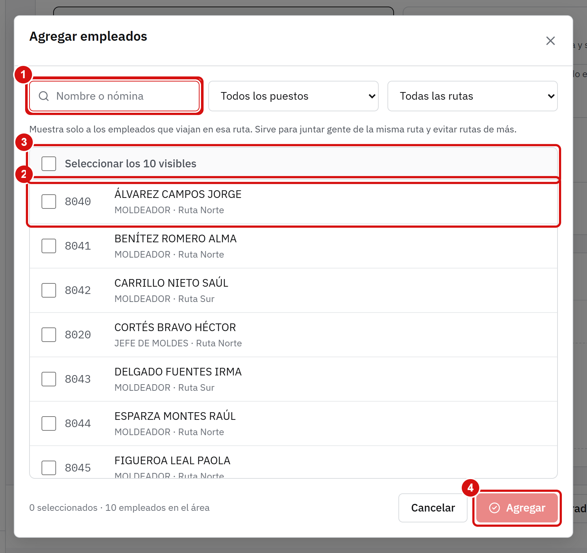
Busca por nombre o nómina, o filtra por puesto o por ruta.
Marca la casilla de cada empleado. Puedes marcar varios.
O toca Seleccionar los visibles para marcar todos los de la lista.
Toca Agregar.
Paso 3 · Horario, alimentos y transporte
Primero usa Aplicar a todos para no capturar uno por uno.
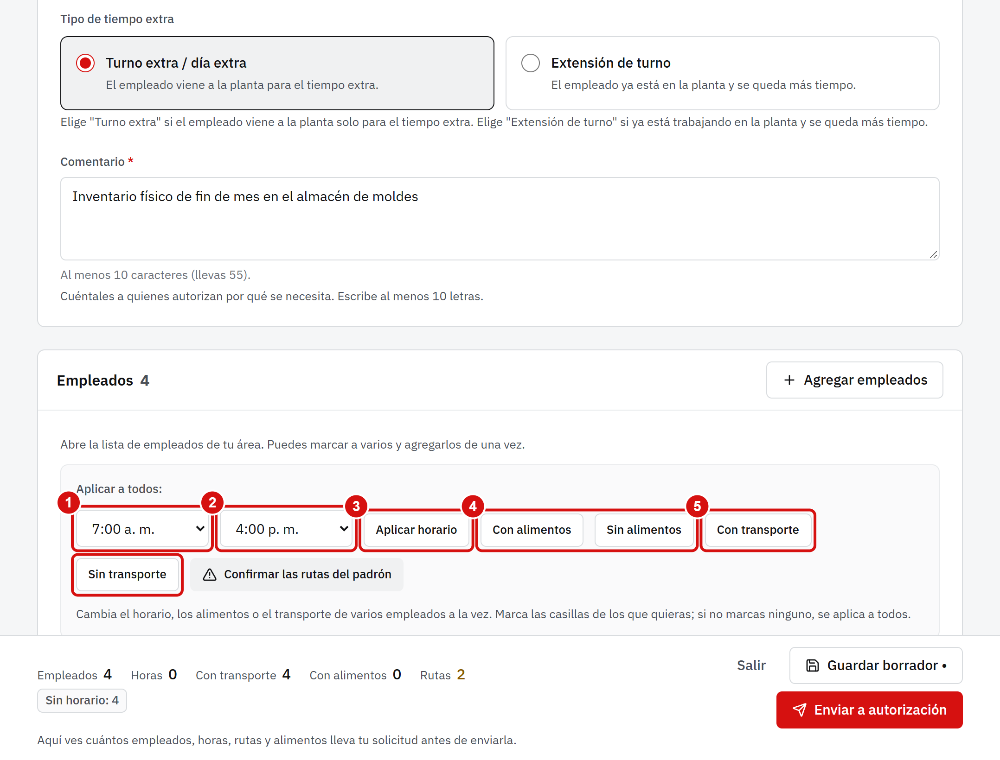
Elige la hora de entrada.
Elige la hora de salida.
Toca Aplicar horario.
Toca Con alimentos o Sin alimentos.
Toca Con transporte o Sin transporte. (Y confirma las rutas con el botón Confirmar las rutas del padrón.)
Marca las casillas de algunos empleados antes de tocar un botón y el cambio se aplica solo a ellos. Si no marcas ninguno, se aplica a todos.
Después revisa a cada empleado. Si alguien tiene un horario distinto o no necesita transporte, cámbialo en su renglón.
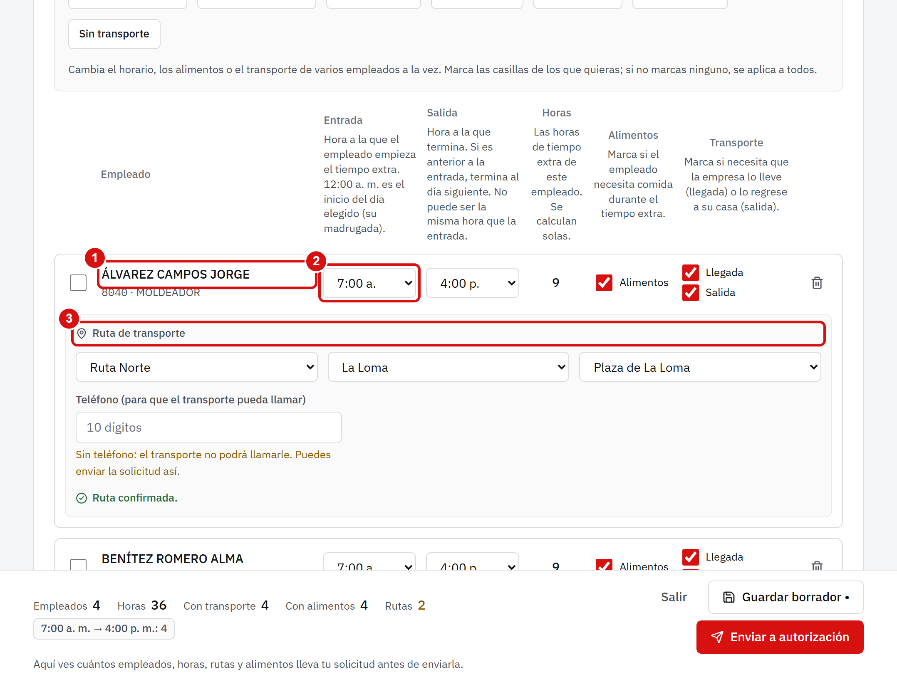
El nombre y la nómina del empleado.
Su horario, sus alimentos y su transporte (llegada y salida).
Su ruta de transporte: ruta, comunidad y punto de reunión. Si ya tiene una guardada, solo confírmala. Puedes escribir su teléfono para que el transporte pueda llamarle.
El horario de entrada y el de salida no pueden ser la misma hora. Una salida «menor» que la entrada (por ejemplo, de 4:00 p. m. a 12:00 a. m.) significa que termina al día siguiente.
Varios motivos, P.O. y TB
Si no todos los empleados van por el mismo motivo, toca Agregar otro motivo (hasta 5). Después, en el renglón de cada empleado, elige el que le toca.
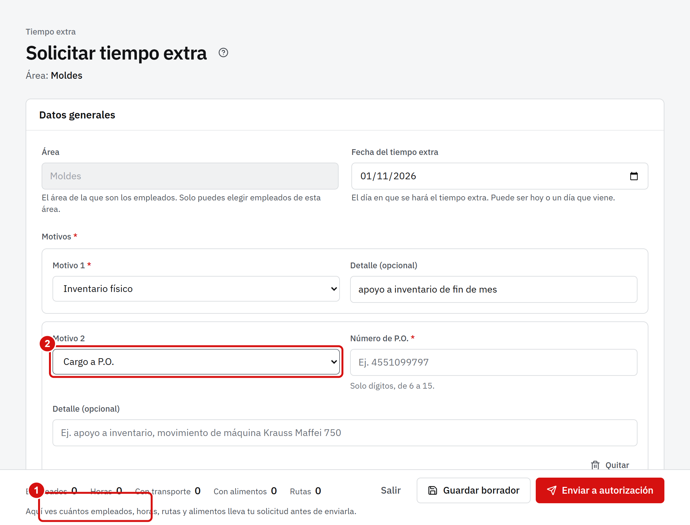
Toca Agregar otro motivo.
Elige el segundo motivo. Con Cargo a P.O. o Cargo a TB, el portal pide el número. Con Otro, pide que lo describas.
Más de una ruta
Cada ruta adicional cuesta dinero. Si tu solicitud usa más de una ruta, el portal te avisa y te pide explicar por qué no basta una sola (mínimo 15 letras).
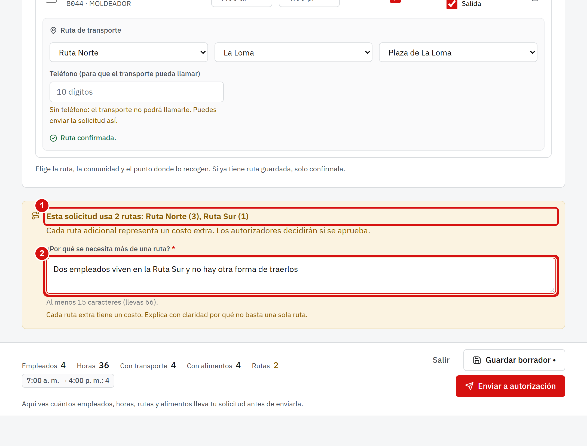
El aviso dice cuántas rutas usa tu solicitud.
Explica el motivo con claridad. Sin esto no se puede enviar.
Para ahorrar rutas, usa el filtro Todas las rutas al agregar empleados: así juntas a la gente de una misma ruta.
Paso 4 · Guardar o enviar
La barra de abajo siempre te acompaña.
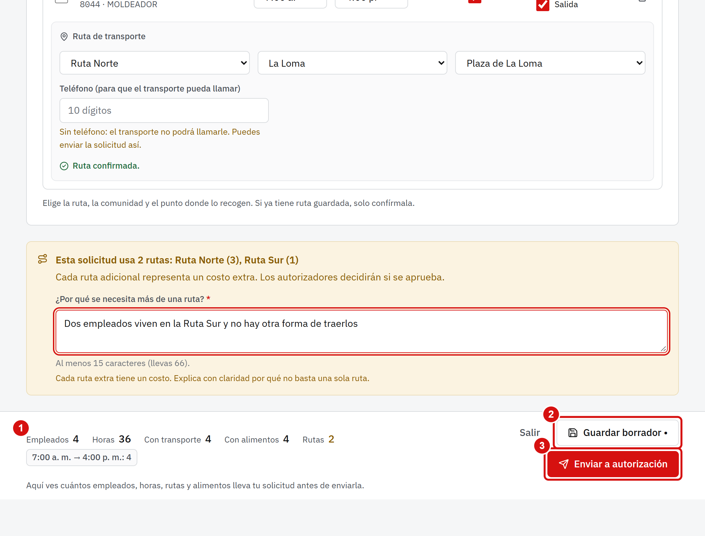
El resumen: empleados, horas, con transporte, con alimentos y rutas. Revísalo antes de enviar.
Guardar borrador: guarda lo que llevas para seguir después. No lo ve nadie más.
Enviar a autorización: manda la solicitud al jefe de tu área.
Al tocar Enviar a autorización, el portal te muestra un resumen y te pregunta si estás seguro. Toca Enviar. La solicitud recibe su folio (por ejemplo, TE-2026-0012).
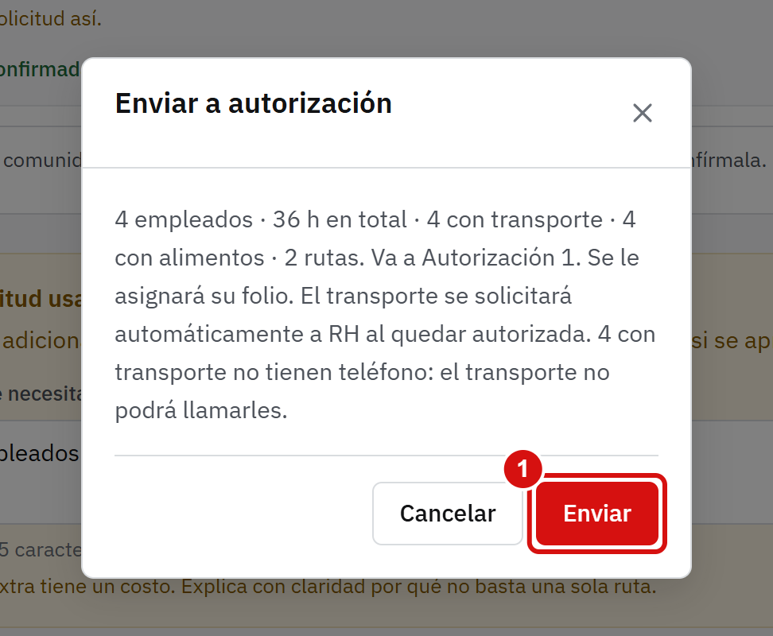
Si falta algo, el portal te dice cuántas cosas faltan y las marca. Corrígelas y vuelve a enviar.
6. Ver cómo va tu solicitud
En Mis solicitudes están todas las tuyas, separadas por pestañas según su estatus.
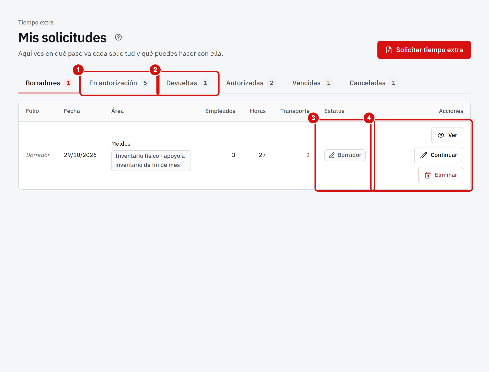
Pestaña En autorización: las que esperan una firma.
Pestaña Devueltas: las que debes corregir. El número rojo avisa que hay pendientes.
La columna Estatus dice en qué paso va y con quién está.
En Acciones están los botones de cada solicitud: Ver, Cancelar, Continuar, Corregir y reenviar.
Toca Ver para abrir el detalle: estatus, fecha, motivos, empleados con su horario y las firmas.
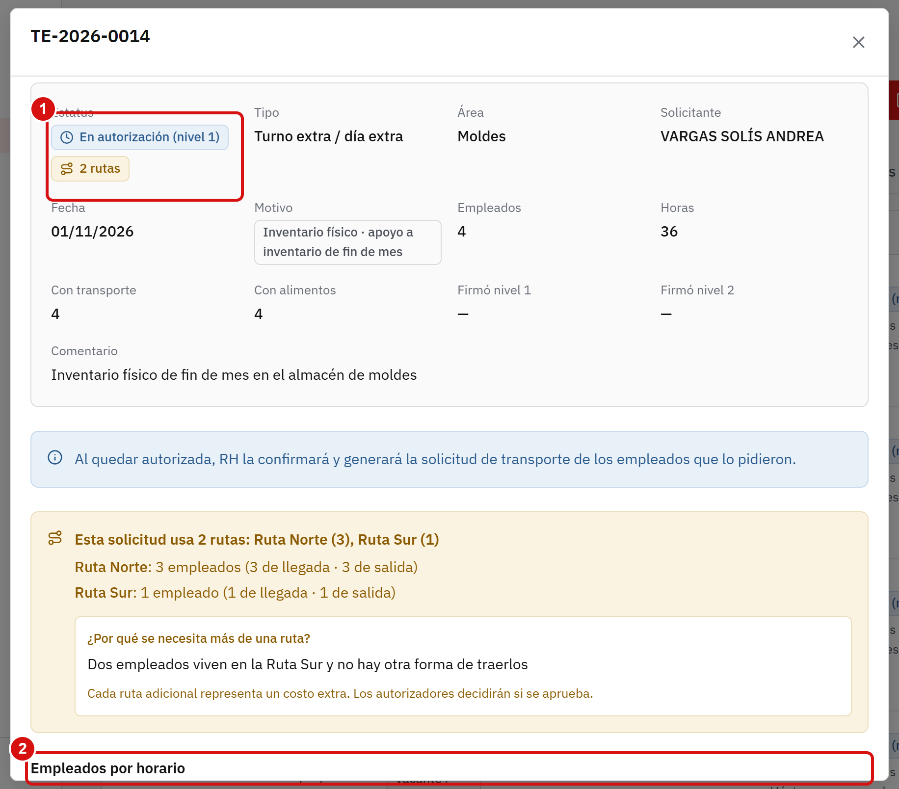
Arriba, el estatus y los datos de la solicitud.
Más abajo, los empleados por horario y la lista de empleados.
Al final del detalle está el Historial: quién hizo qué y cuándo. Ahí ves, por ejemplo, quién la autorizó o por qué la devolvieron.
7. Corregir una solicitud devuelta
Si el jefe de área o Autorización 2 devuelve tu solicitud, te dice el motivo. Corrígela y reenvíala: vuelve a empezar desde la primera firma.
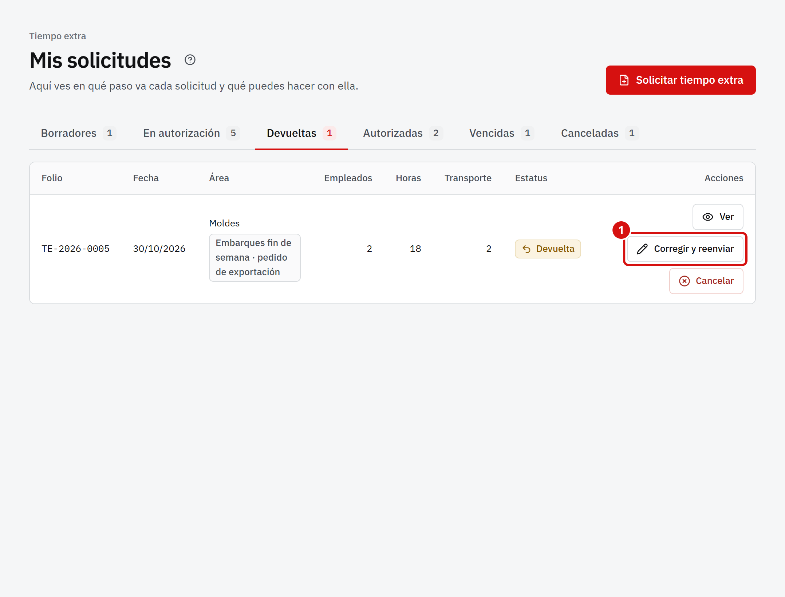
En Mis solicitudes, abre la pestaña Devueltas y toca Corregir y reenviar.
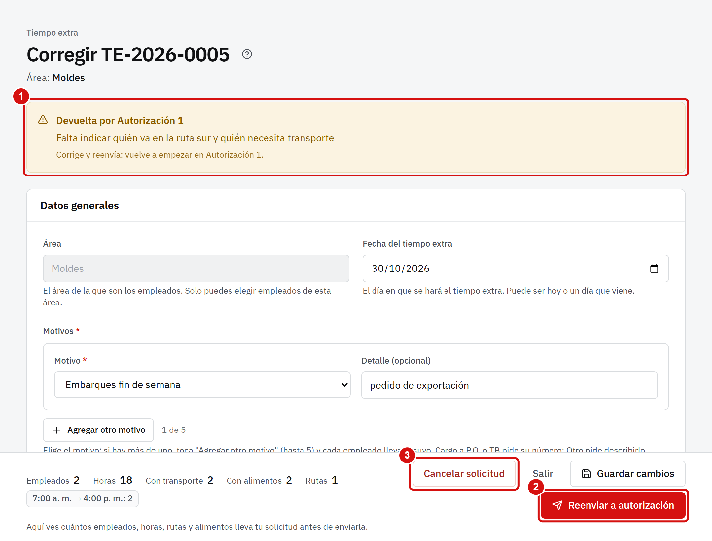
Lee el motivo de la devolución. Dice quién la devolvió y qué falta.
Cambia lo que haga falta y toca Reenviar a autorización.
Si ya no se necesita, toca Cancelar solicitud.
También puedes tocar Guardar cambios para seguir después, sin reenviar todavía.
8. Cancelar una solicitud
Puedes cancelar una solicitud que todavía no está autorizada. Si ya está autorizada, pide a Recursos Humanos que la cancele.
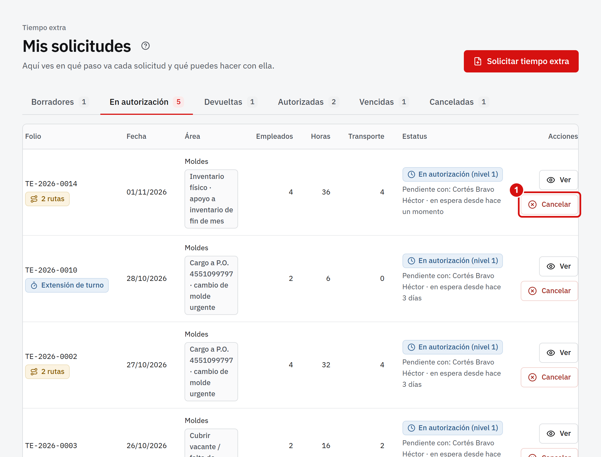
En la pestaña En autorización, toca Cancelar en la solicitud que quieras.
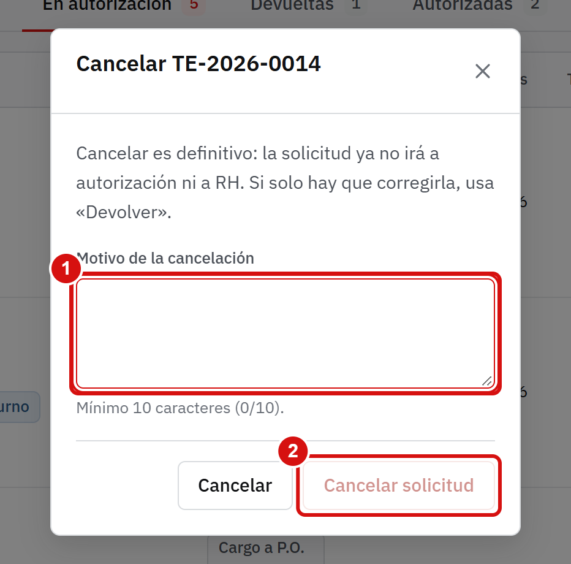
Escribe el motivo de la cancelación (mínimo 10 letras).
Confirma. La solicitud pasa a Canceladas y ya no se puede reenviar.
Un borrador no se cancela: se elimina con el botón Eliminar.
9. Solicitudes vencidas y «Duplicar con otra fecha»
Una solicitud queda Vencida cuando pasó el día del tiempo extra y todavía no tenía todas las firmas. Ya no se puede autorizar de la forma normal. Aparece en la pestaña Vencidas.
No la pierdes: puedes copiarla con otra fecha.
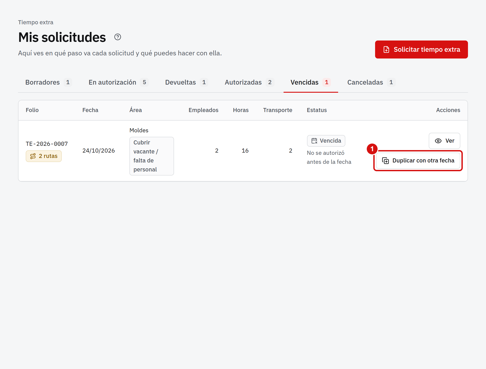
En la pestaña Vencidas, toca Duplicar con otra fecha.
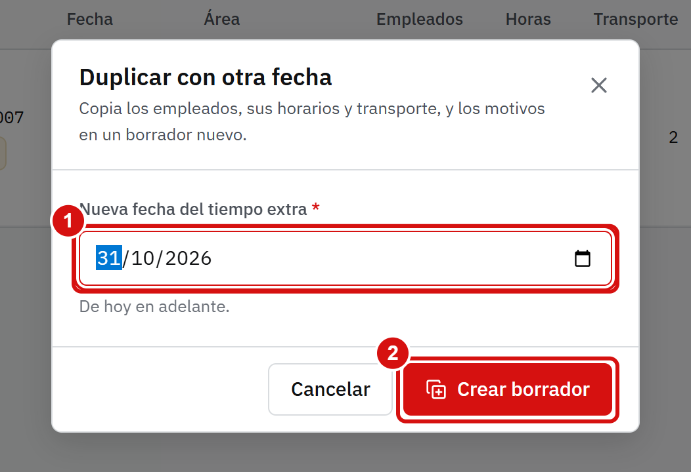
Elige la nueva fecha (de hoy en adelante).
Toca Crear borrador. Se copian los empleados, sus horarios y su transporte, y los motivos.
El borrador nuevo queda en Borradores. Revísalo y envíalo como cualquier solicitud.
Si de verdad se trabajó ese día, pídele a Autorización 2 que la autorice fuera de tiempo. Eso lo decide ella o él, con un motivo.
10. Desde el celular
El portal también funciona en el celular. El menú se abre con el botón de las tres rayas.
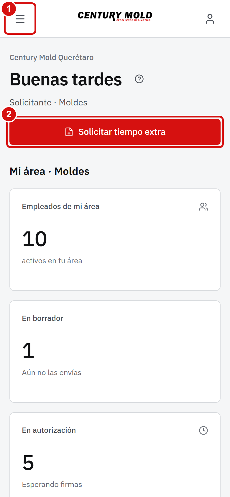
Botón del menú (tres rayas): ahí están Inicio, Solicitar tiempo extra y Mis solicitudes.
Botón Solicitar tiempo extra.
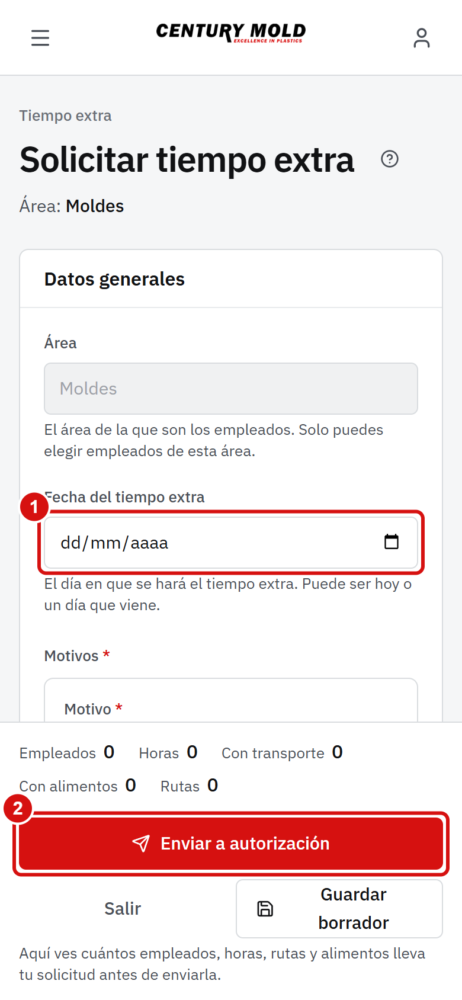
La fecha. Más abajo están el motivo, los empleados y todo lo demás, igual que en la computadora.
Los botones de abajo, para guardar o enviar.
11. Qué significa cada estatus
Estatus
Qué significa
Qué haces tú
Borrador
La guardaste, pero todavía no la envías. Solo tú la ves.
Toca Continuar para terminarla y enviarla, o Eliminar si ya no la necesitas.
En autorización (nivel 1)
Espera la firma del jefe de tu área (Autorización 1).
Nada. Puedes Cancelar si ya no se necesita.
En autorización (nivel 2)
Ya firmó el jefe de tu área. Espera la segunda firma (Autorización 2).
Nada. Puedes Cancelar si ya no se necesita.
Devuelta
Alguien pidió que la corrijas. El motivo viene en la solicitud.
Toca Corregir y reenviar.
Autorizada
Ya tiene las dos firmas. Recursos Humanos la confirmará y pedirá el transporte.
Nada. Si hay un error, pide a Recursos Humanos que la cancele.
Confirmada por RH
Recursos Humanos ya la confirmó y pidió el transporte al proveedor.
Nada.
Vencida
Pasó el día del tiempo extra sin terminar de autorizarse.
Toca Duplicar con otra fecha.
Cancelada
Se canceló. Ya no se puede usar.
Si la necesitas, crea una nueva.
12. Preguntas frecuentes
No me deja enviar. ¿Qué hago?Revisa el aviso rojo: dice cuántas cosas faltan y las marca. Casi siempre falta un horario, un motivo o el comentario (mínimo 10 letras).
No encuentro a un empleado.Solo salen los empleados de tu área. Si alguien debería estar y no sale, avisa a Recursos Humanos.
Me equivoqué después de enviar.Si todavía no se autoriza, cancela la solicitud y captura otra. Si ya se autorizó, pide a Recursos Humanos que la cancele.
¿Puedo pedir tiempo extra para ayer?No. La fecha puede ser hoy o un día que viene.
Mi solicitud dice «Vencida».Pasó la fecha sin terminar de autorizarse. Usa Duplicar con otra fecha.
¿Por qué me pide explicar las rutas?Porque cada ruta adicional cuesta. Explica por qué no basta una sola.
¿Se pierde mi captura si se cierra la sesión?Lo que guardaste como borrador, no. Lo demás sí. Guarda seguido.
13. ¿A quién le pregunto?
Dudas de una solicitud, empleados o permisos: Recursos Humanos.
No puedes entrar, olvidaste tu contraseña o algo no funciona: Sistemas (en persona, con tu identificación).
Quién debe autorizar tu solicitud: el jefe de tu área.